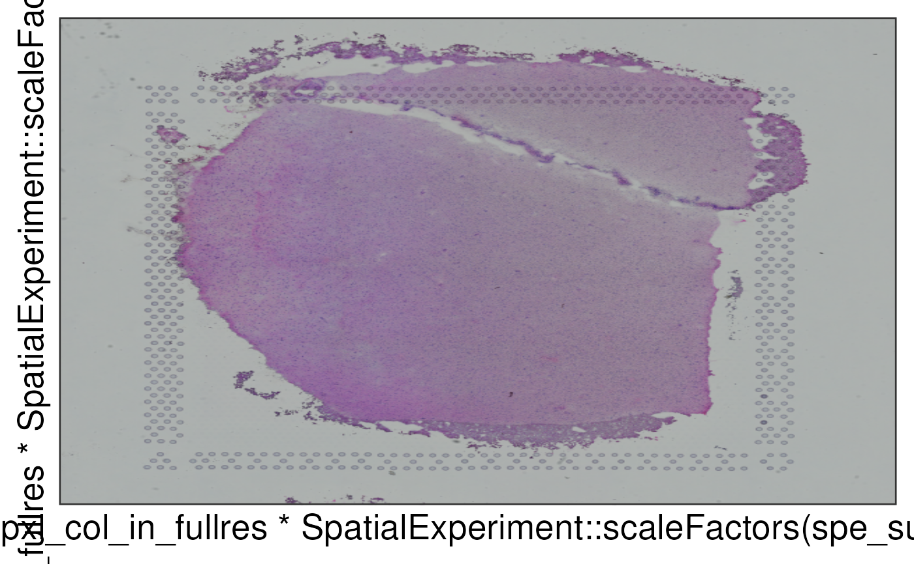

This function defines a ggplot2::layer() for visualizing the histology
image from Visium. It can be combined with other ggplot2 functions for
visualizing the clusters as in vis_clus_p() or gene-level information
as in vis_gene_p().
geom_spatial( mapping = NULL, data = NULL, stat = "identity", position = "identity", na.rm = FALSE, show.legend = NA, inherit.aes = FALSE, ... )
| mapping | Passed to |
|---|---|
| data | Passed to |
| stat | Passed to |
| position | Passed to |
| na.rm | Passed to |
| show.legend | Passed to |
| inherit.aes | Passed to |
| ... | Other arguments passed to |
A ggplot2::layer() for the histology information.
10x Genomics
if (enough_ram()) { ## Obtain the necessary data if (!exists("spe")) spe <- fetch_data("spe") ## Select the first sample and extract the data sample_id <- unique(spe$sample_id)[1] spe_sub <- spe[, spe$sample_id == sample_id] sample_df <- as.data.frame(SpatialExperiment::spatialData(spe_sub)) ## Obtain the histology image img <- SpatialExperiment::imgRaster(spe_sub) ## Transform to a rasterGrob object grob <- grid::rasterGrob(img, width = grid::unit(1, "npc"), height = grid::unit(1, "npc")) ## Make a plot using geom_spatial p <- ggplot2::ggplot( sample_df, ggplot2::aes( x = pxl_row_in_fullres * SpatialExperiment::scaleFactors(spe_sub), y = pxl_col_in_fullres * SpatialExperiment::scaleFactors(spe_sub), ) ) + geom_spatial( data = tibble::tibble(grob = list(grob)), ggplot2::aes(grob = grob), x = 0.5, y = 0.5 ) ## Show the plot print(p) ## Clean up rm(spe_sub) }#> snapshotDate(): 2021-04-27#> 2021-04-29 17:33:09 loading file /github/home/.cache/R/BiocFileCache/b8f5af395ba_Human_DLPFC_Visium_processedData_sce_scran_spatialLIBD.Rdata%3Fdl%3D1